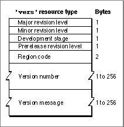

Legacy Document
Important: The information in this document is obsolete and should not be used for new development.
Important: The information in this document is obsolete and should not be used for new development.


The Version Resource
You can use a version resource in any file so that users can easily find out the version of the file and, if it is a part of a larger collection of files, of the entire superset of files. A version resource is a resource with the resource type'vers'. The version resource
with a resource ID number of 1 specifies the version of an individual file; the version resource with a resource ID number of 2 specifies the superset of files to which the individual file belongs.If your application does not contain a version resource with a resource ID number of 1, the Finder displays the string from your application's signature resource (described
in "Giving a Signature to Your Application and a Creator and a File Type to Your Documents" beginning on page 7-7) in the information window when the user chooses the Get Info command from the File menu.This section describes the structure of this resource after it is compiled by the Rez resource compiler. The format of a Rez input file for a version resource differs from its compiled output form. If you are concerned only with creating version resources, see "Providing Version Resources" beginning on page 7-29.
If you examine a compiled version of version resource, as illustrated in Figure 7-30 on page 7-65, you find that it contains the following elements:
Figure 7-30 Format of a compiled version (
- Major revision level in binary-coded decimal format.
- Minor revision level in binary-coded decimal format.
'vers') resource
- Development stage. The values that can appear in this field, as well as the constants that can be used to specify them in a Rez input file, are the following:
Value Constant Description 0x20 developmentPrealpha file 0x40 alphaAlpha file 0x60 betaBeta file 0x80 releaseReleased file - Prerelease revision level. This number specifies the version if the software is
still prerelease.- Region code. This identifies the script system for which this version of the software is intended. See the chapter "Script Manager" in Inside Macintosh: Text for information about the values represented by the various region codes that can be specified here.
- Version number. This Pascal string identifies the version number of the software. When the user opens the Views control panel, clicks the Show version box, and then chooses any command from the View menu other than by Icon or by Small Icon, the Finder window containing this application displays this string.
- Version message. This Pascal string identifies the version number and either a company copyright for a file or a product name for a superset of files. When the
user selects this file and chooses the Get Info command, the Finder displays this
string in the information window as follows: